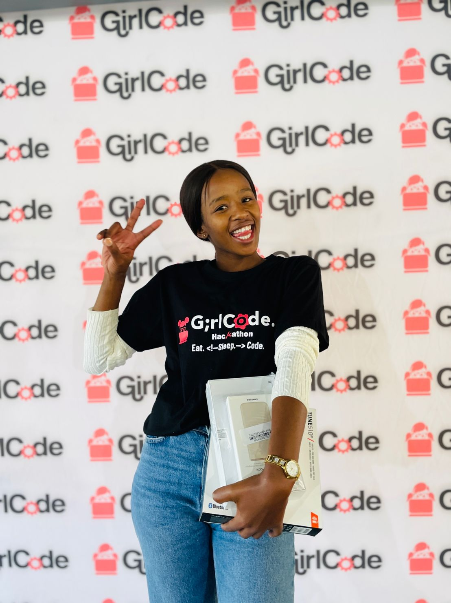
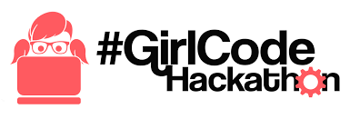
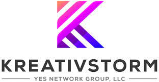
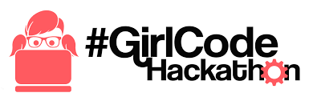
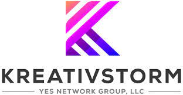
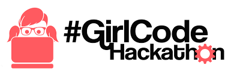
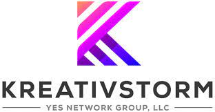
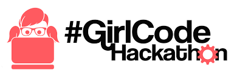
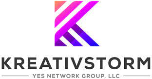
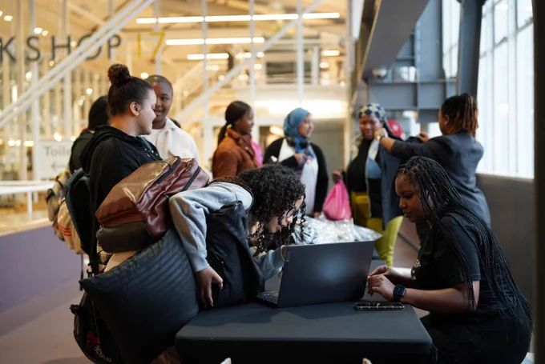

Introduction

 







 I am Esethu Pakosi, a web developer with a background in law enforcement turned coding enthusiast. From discovering my passion for coding at SheCodes foundation to winning second place at the 2023 Girlcode hackathon, I've embraced every opportunity to learn and grow in the tech industry. I recently completed the Kreativestorm hands-on program, where I thrived in collaborative projects and honed my skills in both individual and team settings. Now, I'm excited to bring my unique blend of experience, dedication, and creativity to new projects and teams. Explore my portfolio to see examples of my work and learn more about what I can bring to your team. Let's collaborate and create something amazing together!
..Prev